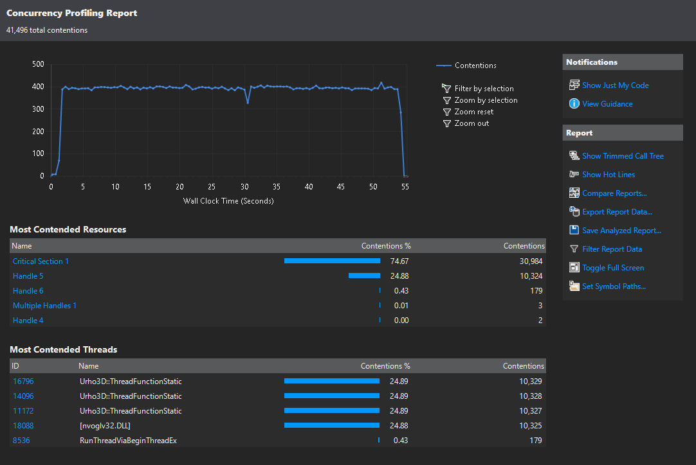
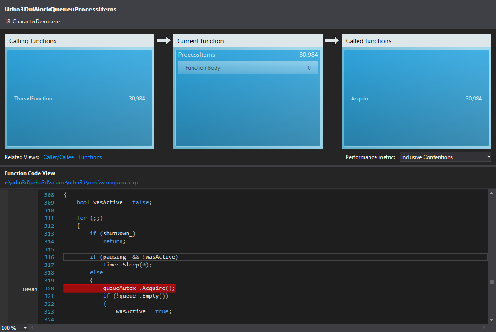

It seems the WorkQueue implementation suffers from lock contention problem.
I’ve ran concurrency profiling in VS2017 on sample 18_CharacterDemo, and I’m getting ~400 lock contentions at any given moment (per frame?):

Which mostly come from WorkQueue::ProcessItems():

Probably depends on the CPU, for some users this doesn’t have any noticeable effect, for others it causes small stuttering, and if they use -nothreads it significantly reduces the stuttering.
I’m not proficient with multithreaded programming, but maybe lock-free queue can be used here to solve this problem?
There’re libraries such as
Boost.Lockfree
and
libcds
that provide implementations.